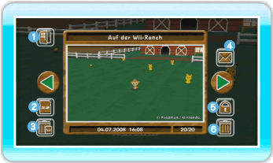
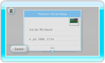

20 |
Album |
 |
Hier kannst du dir deine Bilder ansehen oder sie zur Wii-Pinnwand übertragen. Im Album ist Platz für zwanzig Bilder, du kannst aber auch Bilder auf einer SD Card speichern. Hinweis: Wenn du mehr als zwanzig Fotos schießt, wird jeweils das älteste automatisch überschrieben. ● Album ansehen Wenn du im Hauptmenü ALBUM auswählst, erscheint der Album-Bildschirm. Um zwischen den einzelnen Bildern zu wechseln, zeige auf einen der grünen Pfeile und drücke  Zurück
Hiermit verlässt du den Album-Bildschirm. Auf SD Card speichern
Hiermit kannst du Bilder von My Pokémon Ranch auf einer SD Card speichern. Hinweis: Die Bilder werden im JPEG-Format gespeichert. Bilder, die du auf einer SD Card speicherst, können im Album nicht wiederhergestellt werden, aber du kannst sie im Foto-Kanal oder auf deinem Computer betrachten. Hinweis: Die Rechte an den in My Pokémon Ranch gemachten Bildern liegen bei The Pokémon Company und anderen Rechteinhabern. Bitte verwende die Bilder nur im Rahmen der Copyright-Bestimmungen. Alle Fotos auf der SD Card löschen
Hiermit kannst du alle My Pokémon Ranch-Bilder auf einer SD Card löschen. 
An Wii-Pinnwand heften
Hiermit kannst du Bilder zur Wii-Pinnwand übertragen. Schreibschutz aktivieren/deaktivieren
Hiermit kannst du den Schreibschutz für ein Bild aktivieren bzw. deaktivieren. Bilder, deren Schreibschutz aktiviert ist, können nicht gelöscht werden. Du kannst den Schreibschutz für bis zu 19 Bilder aktivieren. Löschen
Hiermit kannst du das momentan angezeigte Bild löschen.
|
 bzw. drücke
bzw. drücke  (links oder rechts) oder
(links oder rechts) oder  und
und  .
. |
 |
 |